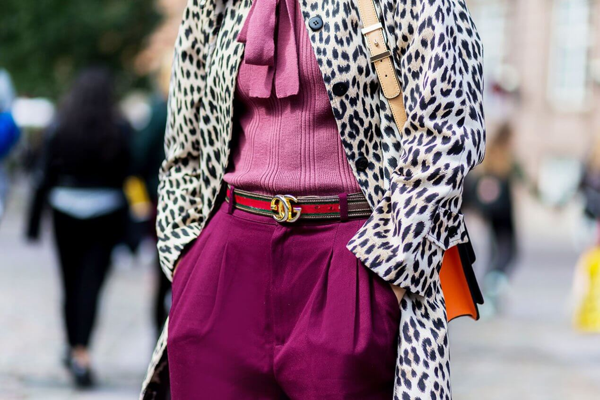
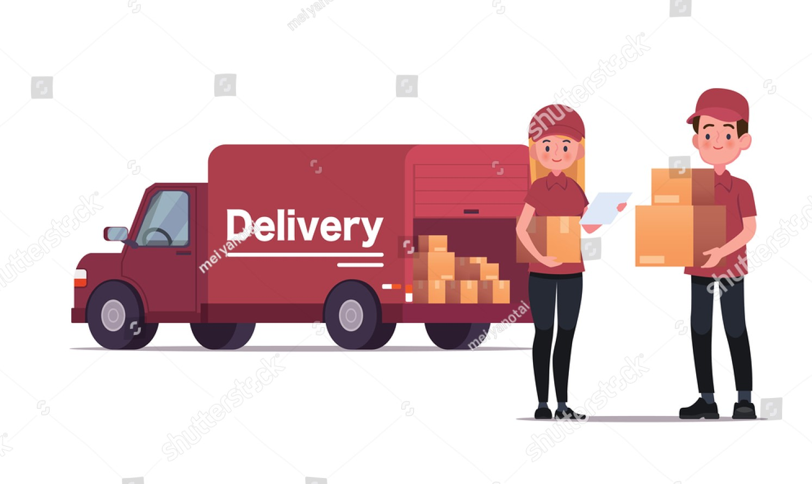

Meet The Team
-

Andrej Cat
Photographer
About Product
Иногда, чтобы спасти образ и добавить ему стиля, достаточно надеть ремень, но не любой – а модный и трендовый. Рассказываем, какие ремни актуальны и что на этот счет думают именитые дома моды и бренды.Ремень – это длинная лента из ткани, кожи или других материалов, оснащенная пряжкой и предназначенная для поддержания поясной одежды, а также для расстановки акцентов на талии или бедрах.Ремень и пояс – это разные детали гардероба? Главное отличие пояса – отсутствие пряжки и люверсов – отверстий для фиксации язычка. Пояс завязывается, в то время как ремень – застегивается с помощью пряжки, язычка и люверсов.Ремни демонстрируют чувство вкуса, подчеркивают достоинства и делают образ более стильным. Разумеется, такой многофункциональный аксессуар не обходит стороной модные подиумы – бренды с удовольствием используют ремни для создания модных луков для показов.
Delivery
Нова пошта – поштово-вантажна компанія, що забезпечує легку доставку кожному клієнту - до відділення, поштомату, за адресою. Компанія надає логістичні та дистрибуційні послуги, доставляючи як найдрібніші посилки, так і великі вантажі. Нова пошта дозволяє тисячам підприємців створювати і розвивати бізнес не тільки в Україні, а й за кордоном. Мережа компанії налічує більше 9300 відділень по всій Україні та понад 11000 поштоматів, а кількість відправлень за 2020 рік перевищила 300 млн посилок та вантажів. Укрпошта Стандарт — економна доставка по Україні для тих, хто обирає найвигіднішу ціну.Вартість доставки залежить від ваги та відстані.
